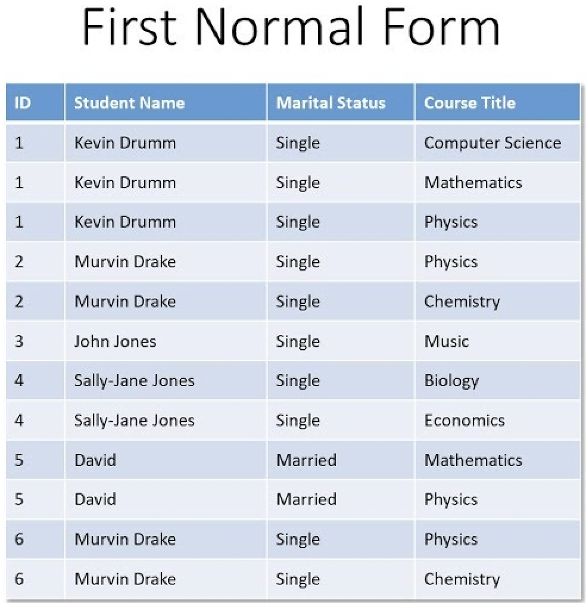

Chapters:-
1. Database management system
2. Data Communication and Networking
3. Web Technology II
4. Programming in C
5. Object oriented programming(OOP)
6. Software Process Module (SPM)
7. Recents Trends in Technology
5. Object oriented programming(OOP)
Data
The raw facts or basic facts are referred to as data. When data is
processed, organized, structured, or presented in a specific context
to make it usable, it is referred to be information. "Datium" is the
plural form of data. Data never provides a whole view.
Database
A database is a systematic collection of information, or data, that
is generally kept electronically in a computer system to make it
conveniently accessible, managed, and updatable.
Objective of Database
- Elimination of data redundancy.
- Share data among all the users.
- Incorporate change easily and quickly.
- Simplify the use of data files.
-
Lower the cost of storing and retriving data.
- Improve accuracy and consistency.
-
Provide data security from unauthorized access and use.
- Get presistancy in data.
- Data generalization.
- User friendly.
- Standard can be global as well.
Importance of Database
- Database stores the data.
-
Computerized database saves data from being lost.
-
Computerized database protects in a small area or space in
computerized database.
Information
The processed form of data is called information. In general sense,
it is processed, organized, and structured data. It provides context
for data and enables decision making.
Information can be transmitted in time, via data storage, and space,
via communication and telecommunication. It can be transferred
through telephone, text messages and from various sources.
Information is expressed either as the content of a message or
through direct or indirect observation. That, which is perceived can
be constructed as a message in its own right, and in the sense,
information is always conveyed as the context of a message.
Hence, the collection of data is known as information where data are
organized in such a way that it creates meaning when it becomes
information.
Database management system (DBMS)
Database management system (DBMS) is a computer system that stores
data, process them and provides information in an organized form. A
database management system is a software used to perform different
operations like creating, modifying, updating, organizing, sorting,
removing and retriving.
Features of Database
-
Large volume of data can be stored and updated easily.
- Provides data integrity and security.
- Easy in data management.
- Provides the data sharing facility.
- Reduces the data redundancy.
-
Provides current access, recovers the data from the crashes.
- Supports centralized control.
Advantage of Database
-
Sharing data.
- Reduces data redundancy.
- Data backup and recovery.
- Inconsistency avoided.
- Data integrity.
-
Data security.
- Data independence.
- Multiple user interface.
- Process complex query.
Disadvantage of Database
-
Complexity of backup and recovery.
-
Increased installation and management cost
- Additional hardware and software cost.
- Requirement of new and specialized manpower.
- Increased complexity.
Table
A table is a collection of data items arranged in terms of rows and columns in a relational database model. A
table is also seen as a useful illustration of relationships.
Fields
A field is the smallest unit of data to which a user has access and is made up of one or more related
characteristics or bytes. Each field is individually identified by its name.
Record
A record is a database row that contains a set of linked fields. Because each record has a unique,
distinguishing quality, a Record is frequently utilized in a database search.
Primary Key
To avoid data duplication, each entry in a database table must be individually identifiable. The use of a
primary key in the table allows for this.
Features of Primary Key
-
A table can only have one primary key.
-
The primary key ensures the table's entity integrity.
-
The primary key should never be NULL.
-
A row is uniquely identified by its primary key.
-
The primary key does not always have to be a single property. It can be a collection of many attributes.
Alternate key
Alternate key is a column or group of columns in a table that uniquely identify every row in that table. A
table can have multiple choices for aprimary key but only one can be set as the primary key.
Candidate key
Candidate key is a set of attributes that uniquely identify tuples in a table. Candidate key is a super key
with no repeated attributes. The primary key should be selected from the candidate key.
Properties of Candidate Key
-
It must contain unique values.
-
Candidate key in SQL may have multiple attributes.
-
Must not contain null values.
-
It should contain minimum fields to ensure uniqueness.
-
Uniquely identify each record in table.
DDL and DML
Structured Query Language(SQL)
Structured Query Language (SQL) is a computer language that enables many sorts of operations in relational
databases.
Data Defination Language
A Data Definition Language (DDL) is a component of SQL that describes the structure of a table before putting
any records in it. DDL consists of instructions for creating a table and altering the table's existing
structure after it has been created.
Some DDL commands
CREATE
Command that is used to create a new database or table.
ALTER
Command used to alter the content in the table.
DROP
Command used to delete all the content from the table.
TURNCATE
Command used to delete all the content from the table.
RENAME
Command used to rename the content in the database.
Data Manipulation Language (DML)
DML is a programming language that is used to add, edit, delete, or read records from a table. Data
Manipulation Language is used to populate or fill the table produced by DDL. DDL fills the table's rows, and
each row is referred to as a Tuple. DML allows you to insert, edit, remove, and retrieve information from the
Table.
Database Model
(1)Network Model
Data is structured as a node in a network database architecture, and each node is connected to another node.
In the network model, each given record can have many parent records and numerous child records, allowing the
two records to have a many to many relationship.

(2) Hierarchical Model
A hierarchical database model employs a tree structure to describe the relationship between record nodes, with
one record functioning as the parent of numerous child record nodes.
Features of hierarchical database model
-
Each hiararchical tree can have one record type and any number of child record type.
-
Each child record can have only one parent record type which makes representation for many to many
relationship impossible.
-
Data in present record applies to all its children records.
-
A child records occurance must have a parent record occurance and by deleting parent record results in
deleting all of its children record occurance.
(2) Relational Database Model
Relational database model represents each item of data stored in a relation or table. Each table is identified
by a name and each table consists of attributes which are column names of a table.

Difference between Hiararchical, Network and Relational database model
| Hiararchical DBM |
Network DBM |
Relational DBM |
| Relationship between records is of the parent child type. |
Relationship between records is expressed in the form of pointers. |
Relationship between records is represented by a relation that contain a key for each
record involved in the relationship. |
|
Many to many relationship cannot be expressed in this model.
|
Many to many relationships can be easily implemented.
|
Many to many relationship can easily implemented.
|
|
It is a simple, straight forward and natural methord of implementing records relationships.
|
Records relationship implementation is quite complex due to use of pointers.
|
Relationship implementation is very easy through the use of a key or composite key field.
|
|
Searching for a record is very difficult since one can retrive a child only after going through its parent
record.
|
Searching for a record is very easy since there are multiple access paths to a data element.
|
A uniquely, indexed key field is used to search for a data element.
|
|
In hiararchical model records are physical.
|
In network model records are physical.
|
In relational model database is organized logically in the form of rows and column and stored in table.
|
Normalization
Normalization is the process of organizing data in a database. This includes creating tables and establishing
relationship between those tables according to rules designed both to protect the data and to make the
database more flexible by eliminationg redundancy and inconsistent dependency. It is a multi-step process that
puts data into tabular form, removing duplicated data from the relation tables.
Normalization entails organizing the columns and tables of a database to ensure that their depnedicies are
prperly enforced by database integrity constrains. It is accomplished by applying some formal rules either by
a process of synthesis or decomposition.
Purpose of Normalization
-
Eliminating redundant data.
-
Ensure data dependicies make sense i.e data is logically stored.
Advantage of Normalization
-
Reduce storage requirements by stornig only minimal amount of data.
-
Remove redundancy in data.
-
Remove inconsistent dependicies between attributes.
-
Greater overall database organization.
-
A much more flexible database design.
-
A better handle on database security.
First Normal Form (1NF)
Requirement to be first normal form:
-
There should be no repeated columns or similar data in multiple columns.
-
Each row should unique and atomic.
Steps to convert into 1NF
-
Any repaating groups should be eliminated.
-
Primary key should be identified.

Second Normal Form (2NF)
Requirement to be second normal form:
-
Table should be already in 1NF
-
Non-key attribute must depend on every part of the primary key, i.e, there should be no partial dependicies.
Steps to convert into 2NF
-
Break down the table which has partial dependicies, based on each key compenent.
-
Create a new table using part of primary key which non-key attribute has dependency for.
-
Assign corressponding dependent attribute as the attribute in created new table.
Second normal form:-

Third Normal Form (3NF)
Requirement to be third normal form:
-
Table should be already in 2NF
-
There should be no non-key attribute that determines next non-key attributes, i.e. there should be no transitive dependency.
Steps to convert into 3NF
-
Identify new daterminant attribute, i.e. non key attribute of the table which is acting as determining factor for other non-key attributes.
-
Determine all dependent attributes.
-
Create a new table with determinant as primary key and remaining dependent attributes as non-key attributes of new table.